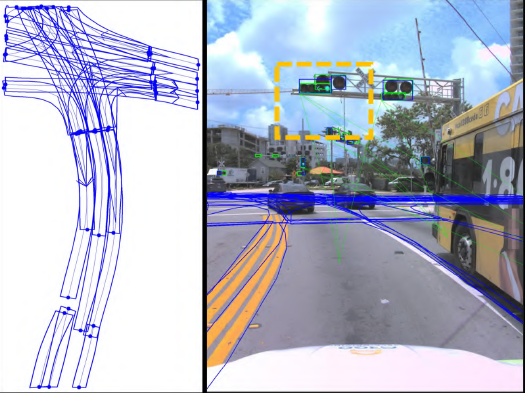

Framework
Overview of Chameleon. Given multi-view images as input, the vision models first generate traffic lanes and traffic elements, respectively. The proposed fast system leverages a large Vision Language Model which takes predefined visual-textual few-shot samples and text prompts as inputs, and generates executable codes to process the predictions by the vision models. The proposed slow system consists of a VQA API Set and a Vision Language Model with Chain-of-thought reasoning, where vision prompts and text prompts within the VQA API Set are the inputs of VLM. Subsequently, the topology reasoning results are an combination of code execution results and VLM outputs

Illustration of Chameleon architecture. Given multi-view images and text prompt as input, Chameleon achieves lane topology extraction. Each API or dense visual prompting VQA task is represented as a node. COT VLM adaptively selects the nodes which are executed to infer the topology results based on input.
Results
The vehicle has just passed the intersection.

There is a left-turn traffic light ahead.
The ground lane is marked with a straight-ahead sign.
The vehicle is on a one-way right-turn lane
BibTeX
BibTex Code Here